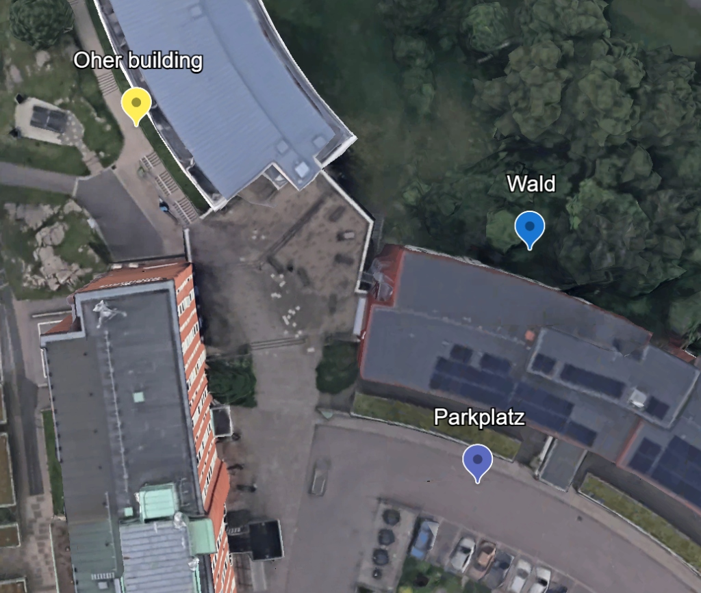
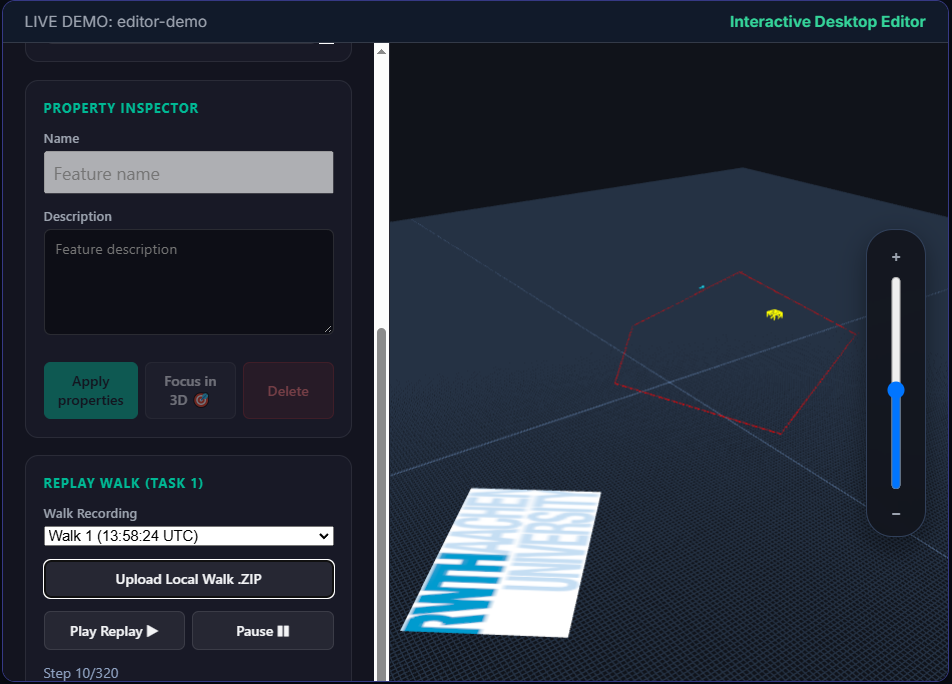
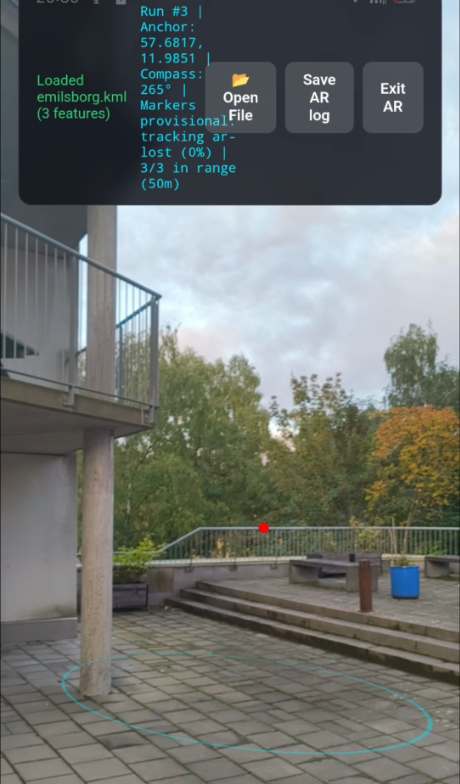

Location-Based WebXR
KML / KMZ Editor
1. INTRODUCTION & MOTIVATION
Why We Built This System
The Goal
- Load, view, and edit geographic KML/KMZ files directly in the browser.
- Inspect and edit markers anchored at real GPS positions on smartphones.
Our Solution
- Dual-mode application: 3D Desktop Map Editor + Mobile Field AR View.
- Unified architecture ensuring edits persist identically across desktop and mobile.

1. Google Earth Source Map

2. 3D Desktop Editor

3. Mobile Field AR App
2. SYSTEM ARCHITECTURE
Core Components & Data Flow
2. IMPLEMENTATION DETAILS
Data Losslessness & Geo-Bridge
Lossless Roundtrip Editing
- Lossless Roundtrip: Edit coordinates on desktop or mobile AR, save the file, and reopen in Google Earth.
- 100% Tag Preservation: All custom Google Earth styles, CDATA blocks, comments, and structure tags remain intact.
- Substring Range Search: Uses DOMParser to locate exact character offsets of <coordinates>.
- Targeted Text Replacement: Replaces only coordinate numbers in the raw XML text without re-serializing.
Concrete KML Code Example
<Placemark id="marker1">
<name>Templergraben Gate</name>
<styleUrl>#customPinStyle</styleUrl>
<Point>
<coordinates>6.08388,50.77534,0 6.08450,50.77610,0</coordinates>
</Point>
<!-- Custom Google Earth tags & comments preserved -->
</Placemark>
2. IMPLEMENTATION & LIVE DEMO
Three.js Asset Renderers
Renderers Specifications
- Marker Renderer: Pins & canvas icon sprites positioned in 3D meter space.
- Line Renderer: 3D polylines with custom stroke width, color, and altitude mode.
- GroundOverlay Renderer: 2D image overlays projected onto terrain bounding box.
- 3D Model Renderer: Loads .dae COLLADA models with textures via ColladaLoader.
- VRAM TextureCache: Reuses shared materials to prevent GPU memory leaks.
LIVE DEMO: renderers-demo
Interactive 3D Viewport
3. ARCHITECTURAL INSIGHTS
How It Works
STEP 1
User Edit Gesture
User drags a marker on the 3D map or smartphone AR screen.
UI Layer
editor / ar-scene
STEP 2
Command Dispatch
Creates atomic command object & pushes to Redux Undo stack.
State Layer
commands ➔ store
STEP 3
Geo-Bridge Math
Converts 3D drag meters relative to anchor into GPS Lat/Lon.
Math Layer
geo-bridge (WGS84)
STEP 4
AST XML Substring Edit
AST = Parsed XML tree in memory. Replaces coordinate substring in-place.
AST Model
document-model
STEP 5
Debounced Auto-Save
Waits 500ms after dragging stops before writing file to disk (prevents lagging during 60 FPS drag).
Disk Save
persistence (500ms)
Key Takeaway:
Because commands & math are isolated, both Desktop and AR views share 100% identical save logic and spatial math without code duplication.
4. THE RESULTS & LIVE DEMO
Desktop Editor Live Preview
Desktop Editor Features
- Interactive 3D Map: OrbitControls for navigating around KML features.
- Sidebar & Inspector: Feature tree view and property editing panel.
- Undo / Redo: History stack supported via Ctrl+Z / Ctrl+Y.
- Google Earth Compatible: Reopens saved KMZ files with modified coordinates intact.
LIVE DEMO: editor-demo
Interactive Desktop Editor
4. THE RESULTS & MOBILE AR DEMO
Mobile AR Field Demo (Video)
Mobile AR Features
- Live Camera Pass-Through: Overlays 3D KML features onto real-world camera video feed.
- 🛰️ Real GPS vs. ⚙️ Mock GPS: Switch between real field GPS and eye-level desk testing.
- Grab-to-Move POV Editing: Drag markers on screen in real time to alter their GPS position.
- Orientation Sensors: Uses smartphone Gyroscope & Compass to sync 3D camera rotation.
VIDEO DEMO: Mobile AR Field App
ar-demo-video.mp4
5. PROBLEMS ENCOUNTERED
Lab Challenges & Honest Learnings
Code Comprehension under High Workload & AI Code
- Rapid development with heavy AI code generation created high code volume.
- Under tight time constraints, gaining deep understanding of every underlying layer was difficult.
AR Marker Positioning Issues
- Positioning markers accurately in mobile AR proved problematic.
- Framework positioning functions were not utilized correctly by our viewer layer.
- Resolving this would require refactoring the viewer layer from scratch (unresolved due to time).
6. WHAT WORKED WELL
Lab Successes
Fast Modular Prototyping
- Individual components (parser, math bridge, renderers, store) were created quickly.
- Strict modular separation established a clean system architecture.
Lossless KML Round-Trip Editing
- Lossless coordinate editing works reliably across saved files.
- Modifying coordinates in our app updates only target values, keeping all XML styles intact in Google Earth.
7. RECAP & OVERVIEW
Recap: Key Takeaways
1. System Schema
2. Google Earth Map
3. 3D Desktop Editor
4. Mobile AR Field App
Thank You
Questions & Discussion
5-Minute Q&A Session